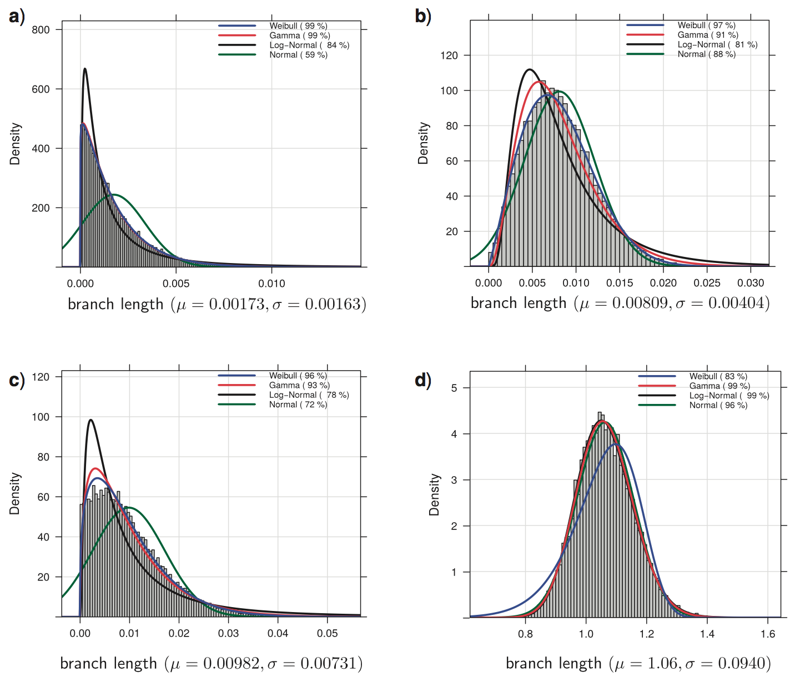
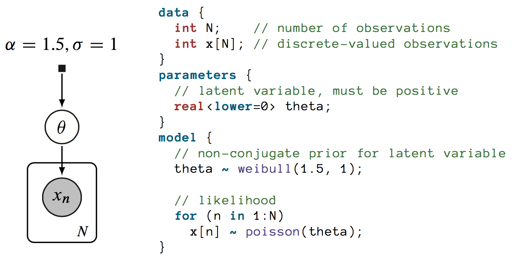
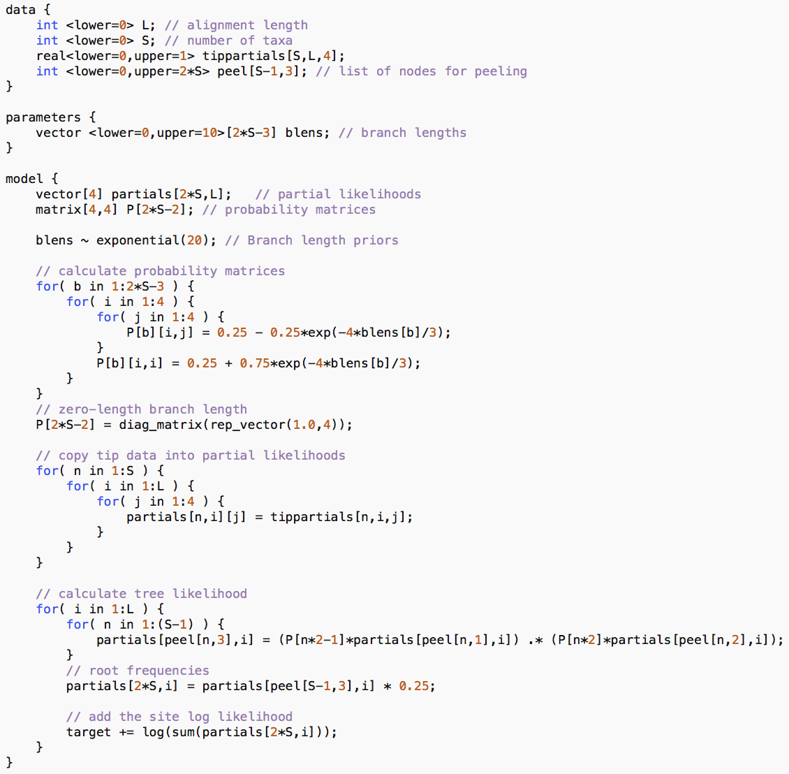

Phylogenetics using Variational Inference
Mathieu Fourment
ithree institute
University of Technology Sydney
University of Technology Sydney
9th Phylomania Meeting
6-8 December, 2017
6-8 December, 2017
Approximating Distribution in Phylogenetics
- Usually approximate posterior with MCMC and propose parameters one by one
- Adaptive MCMC to jointly proposal parameters
- Independence sampler
Approximating the distribution of a branch length
- Fitting parametric distribution
- Goal is to improve sampling the tree space

Aberer, Stamatakis, Ronquist 2016
Approximating the distribution of a branch length
- Fitting a simpler distribution:
- $$ f(c, m, r, b; t) = c \log \left ( \frac{1 + e^{(r(t + b))^{-1}}}{2} \right ) + m \log \left(\frac{1 - e^{(r(t + b))^{-1}}}{2} \right) $$
- Nonlinear least-squares optimization
- Sampling from surrogate function using rejection sampling
Claywell, Dinh, Fourment, McCoy, Matsen 2017
Variational inference
Minimize the Kullback Leibler divergence from variational distribution $q$ to posterior distribution $p$
$$ \boldsymbol{\phi}^* = \operatorname*{arg\,min}_{\boldsymbol{\phi} \in \boldsymbol{\Phi}} \operatorname{KL}(q(\boldsymbol{\theta}; \boldsymbol{\phi}) \parallel p(\boldsymbol{\theta} \mid \mathbf{x})) $$Evidence lower bound (ELBO)
\[ \begin{aligned} \operatorname{KL}(q(\boldsymbol{\theta}; \boldsymbol{\phi}) \parallel p(\boldsymbol{\theta} \mid \mathbf{x})) & = \mathop{\mathbb{E}}[\log q(\boldsymbol{\theta})] - \mathop{\mathbb{E}}[\log p(\boldsymbol{\theta} \mid \mathbf{x})] \\ & = \mathop{\mathbb{E}}[\log q(\boldsymbol{\theta})] - \mathop{\mathbb{E}}[\log p(\boldsymbol{\theta}, \mathbf{x})] + \log p(\mathbf{x}) \end{aligned}\]$p(\mathbf{x})$ constant with respect to $q(\boldsymbol{\theta})$
Instead of minimizing KL divergence, maximize evidence lower bound:
$$ \textrm{ELBO}(q) = \mathop{\mathbb{E}}_{q(\boldsymbol{\theta}; \boldsymbol{\phi})}[\log p(\mathbf{x}, \boldsymbol{\theta}) - \log q(\boldsymbol{\theta}; \boldsymbol{\phi})]$$ELBO(q) is the lower bound of evidence:
$$\log p(\mathbf{x}) \geq \textrm{ELBO}(q)$$Variational distributions
Mean-field Gaussian:
$$ q(\boldsymbol{\theta}; \boldsymbol{\phi}) = \mathcal{N}(\boldsymbol{\theta}; \boldsymbol{\mu}, diag(\boldsymbol{\sigma}^2)) = \prod_{i=1}^n \mathcal{N}(\theta_i; \mu_i, \sigma_i^2) $$Full-rank Gaussian:
$$ q(\boldsymbol{\theta}; \boldsymbol{\phi}) = \mathcal{N}(\boldsymbol{\theta}; \boldsymbol{\mu}, \boldsymbol{\Sigma}) $$Variational inference software
- Stan (Automatic differentiation; HMC, MCMC)
- Edward, BayesPi...
- Even Uber with Pyro
Simple Stan model
Jukes Cantor model in Stan
Simulation study
- Random coalescent tree with 6 taxa
- Simulate alignment with GTR
- Every ranked labelled tree was enumerated (2700 phylogenies)
- Analyse with BEAST and Stan